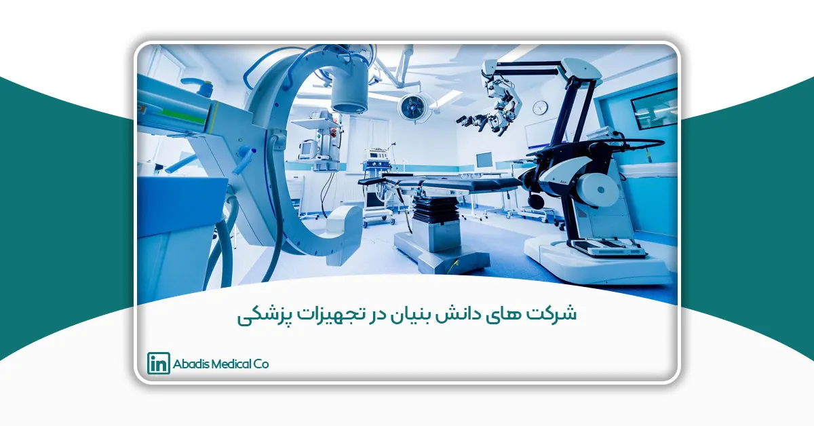
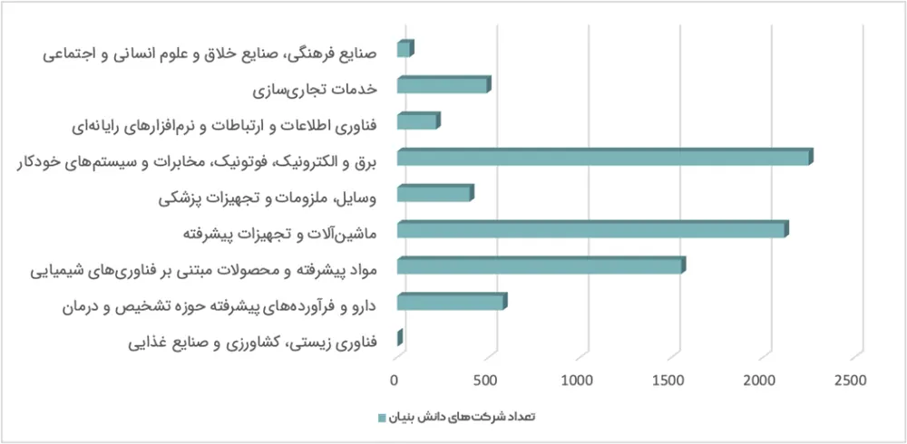

مقدمه
امروزه پیشرفتهای علمی و فناوری، صنایع مختلف را دستخوش تحول کردهاند و صنعت تجهیزات پزشکی نیز از این قاعده مستثنا نیست. در این میان، شرکتهای دانشبنیان نقش مهمی در توسعه فناوریهای نوین و ارائه راهکارهای بومی ایفا میکنند. این شرکتها با تکیه بر دانش تخصصی، تحقیق و توسعه، و نوآوریهای فناورانه، توانستهاند تحولی چشمگیر در تولید تجهیزات پزشکی ایجاد کنند و وابستگی به واردات را کاهش دهند و سهم قابلتوجهی در تأمین نیازهای داخلی داشته باشند.
با رشد فناوری و افزایش نیاز مراکز درمانی به تجهیزات پیشرفته، حمایت از شرکتهای دانشبنیان به یک ضرورت تبدیل شده است. این شرکتها نهتنها کیفیت خدمات درمانی را بهبود میبخشند، بلکه موجب کاهش هزینههای نظام سلامت و افزایش توان رقابتی کشور در بازارهای بینالمللی میشوند. بااینحال، مسیر رشد و توسعه برای این کسبوکارهای فناورانه همواره هموار نیست و چالشهایی مانند تأمین مالی، دریافت مجوزهای قانونی و رقابت با برندهای خارجی از موانع پیش روی آنها محسوب میشوند.
در این مقاله، نقش شرکتهای دانشبنیان در صنعت تجهیزات پزشکی را بررسی خواهیم کرد و به فرصتها، چالشها و راهکارهای توسعه این صنعت میپردازیم. همچنین، نمونههایی از شرکتهای موفق، ازجمله شرکت دانشبنیان مخازن طبی آبادیس، را معرفی خواهیم کرد که با نوآوری در تولید کیسه ساکشن یکبار مصرف، توانستهاند جایگاه ویژهای در بازار تجهیزات پزشکی به دست آورند. هدف این مقاله، ارائه بینشی جامع در مورد تأثیر شرکتهای دانشبنیان بر رشد و پیشرفت صنعت تجهیزات پزشکی و ضرورت حمایت از این بخش است.
شرکتهای دانشبنیان حوزه تجهیزات پزشکی
تعریف شرکتهای دانشبنیان
شرکتهای دانشبنیان حوزه تجهیزات پزشکی نقش مهمی در توسعه صنعت سلامت دارند. شرکتهای دانشبنیان فعال در حوزه تجهیزات پزشکی، کسبوکارهایی هستند که با اتکا بر دانش فنی، فناوریهای پیشرفته و تحقیقات علمی اقدام به طراحی، تولید، و تجاریسازی تجهیزات و ملزومات پزشکی میکنند.
این شرکتها بر پایه نوآوری و فناوریهای پیشرفته شکل گرفتهاند و با ارائه راهکارهای جدید، نیازهای بیمارستانها، مراکز درمانی و بیماران را برطرف میکنند. در سالهای اخیر، با گسترش سیاستهای حمایت از تولید داخلی، توجه به این شرکتها افزایش یافته و بسیاری از تجهیزات پزشکی که پیشتر از خارج وارد میشد، اکنون در داخل کشور و توسط این شرکتها تولید میشود. کاهش وابستگی به واردات، کاهش هزینههای درمان، افزایش کیفیت خدمات پزشکی و تسریع فرآیندهای درمانی از جمله مزایای توسعه شرکتهای دانشبنیان در این حوزه است.
طبق آییننامه مصوب معاونت علمی، فناوری و اقتصاد دانشبنیان ریاست جمهوری، یک شرکت در صورتی دانشبنیان محسوب میشود که فعالیتهای آن مبتنی بر تحقیق و توسعه (R&D) باشد و محصولات یا خدماتی با سطح فناوری بالا ارائه دهد. این شرکتها میتوانند در حوزههای مختلفی مانند تولید تجهیزات پزشکی پیشرفته، فناوریهای دیجیتال سلامت، تجهیزات تصویربرداری پزشکی، کنترل عفونت بیمارستانی، مهندسی بافت، بیومتریال، و دستگاههای توانبخشی فعالیت کنند.
شرکتهای دانشبنیان به تفکیک حوزه فناوری
طبق دادههای ارائهشده از معاونت علمی، فناور و اقتصاد دانش بنیان ریاست جمهوری، شرکتهای دانشبنیان در صنایع مختلفی فعالیت دارند. تعداد شرکتهای فعال در هر حوزه فناوری به شرح زیر است:
- فناوری زیستی، کشاورزی و صنایع غذایی: ۵۰۰ شرکت
- دارو و فرآوردههای پیشرفته حوزه تشخیص و درمان: ۵۷۸ شرکت
- مواد پیشرفته و محصولات مبتنی بر فناوریهای شیمیایی: ۱۵۵۳ شرکت
- ماشینآلات و تجهیزات پیشرفته: ۲۱۱۶ شرکت
- وسایل، ملزومات و تجهیزات پزشکی: ۳۹۶ شرکت
- برق و الکترونیک، فوتونیک، مخابرات و سیستمهای خودکار: ۲۲۴۹ شرکت
- فناوری اطلاعات و ارتباطات و نرمافزارهای رایانهای: ۲۱۲۱ شرکت
- خدمات تجاریسازی: ۴۸۹ شرکت
- صنایع فرهنگی، صنایع خلاق و علوم انسانی و اجتماعی: ۶۸ شرکت

جایگاه شرکتهای دانشبنیان در صنعت تجهیزات پزشکی
۱. کاهش وابستگی به واردات و تأمین نیازهای داخلی
در سالهای اخیر، بسیاری از تجهیزات پزشکی پیشرفته موردنیاز بیمارستانها و مراکز درمانی از طریق شرکتهای دانشبنیان داخلی تأمین شده است. این موضوع نهتنها وابستگی کشور به واردات تجهیزات پزشکی را کاهش داده است، بلکه هزینههای سیستم درمانی را نیز بهبود بخشیده است.
۲. افزایش استانداردهای کیفی و ایمنی در حوزه درمان
محصولات دانشبنیان پزشکی به دلیل تکیه بر دانش فنی و نوآوریهای علمی، اغلب دارای گواهینامههای استاندارد ملی و بینالمللی هستند. این امر، تأثیر مستقیمی بر ارتقای کیفیت خدمات درمانی و افزایش ایمنی بیماران و کادر درمانی دارد.
۳. خلق ارزش افزوده و رشد اقتصادی
توسعه شرکتهای دانشبنیان در حوزه تجهیزات پزشکی، علاوه بر ایجاد اشتغال تخصصی، باعث رشد اقتصادی و توسعه زیستبوم فناوری سلامت در کشور شده است. این شرکتها با تولید محصولات بومی، میتوانند سهم قابلتوجهی از بازار داخلی و بینالمللی تجهیزات پزشکی را به خود اختصاص دهند.
۴. گسترش صادرات و حضور در بازارهای جهانی
امروزه برخی از شرکتهای دانشبنیان ایرانی توانستهاند محصولات خود را به بازارهای منطقهای و بینالمللی صادر کنند. این امر، علاوه بر کسب درآمد ارزی و تقویت اقتصاد دانشبنیان کشور، به ارتقای جایگاه علمی و صنعتی ایران در حوزه تجهیزات پزشکی کمک کرده است.
۵. تحول در حوزه سلامت دیجیتال و پزشکی هوشمند
شرکتهای دانشبنیان حوزه تجهیزات پزشکی، نقش مهمی در پیشرفت فناوریهای سلامت دیجیتال، تلهمدیسین (پزشکی از راه دور)، هوش مصنوعی در تشخیص بیماریها، و تجهیزات پزشکی هوشمند دارند. این نوآوریها میتوانند باعث بهبود کیفیت مراقبتهای پزشکی و دسترسی بهتر به خدمات درمانی شوند.
انواع شرکتهای دانشبنیان حوزه تجهیزات پزشکی بر اساس مجوز
این شرکتها براساس مجوزهای صادر شده و آییننامه ارزیابی و تأیید شرکتهای دانشبنیان از سوی معاونت علمی، فناوری و اقتصاد دانشبنیان ریاست جمهوری، به سه دسته نوپا، نوآور و فناور تقسیم میشوند.
۱. شرکتهای دانشبنیان نوپا
گروه اول شرکتهای نوپا هستند که در مراحل اولیه فعالیت خود قرار دارند و عمدتاً بر روی توسعه نمونههای اولیه محصولات دانشبنیان تمرکز کردهاند. این شرکتها معمولاً هنوز به مرحله تولید انبوه نرسیدهاند، اما ایدههای خلاقانه و طرحهای فناورانهای دارند که میتواند آینده صنعت تجهیزات پزشکی را متحول کند.
این نوع از شرکتهای دانش بنیان شرکتهایی که در مراحل اولیه فعالیت خود هستند و هنوز به تولید صنعتی و فروش پایدار نرسیدهاند اما دارای ایدههای فناورانه و محصولات نوآورانه در حوزه تجهیزات پزشکی هستند.
ویژگیها:
- تمرکز بر تحقیق و توسعه (R&D)
- نمونهسازی اولیه محصولات پزشکی
- فاقد سابقه فروش گسترده در بازار
- دریافت حمایتهای ویژه برای رشد و ورود به بازار
۲. شرکتهای دانشبنیان نوآور
دسته دوم، شرکتهای نوآور هستند که محصولات آنها به مرحله تولید و فروش رسیده اما هنوز سهم قابلتوجهی از بازار را در اختیار ندارند. این شرکتها معمولاً نمونههای اولیه خود را بهبود داده و به سمت تجاریسازی حرکت کردهاند. این شرکتها به مرحله تولید و فروش محصولات فناورانه خود رسیدهاند، اما عمده فعالیت آنها مبتنی بر نوآوری و توسعه فناوری است و هنوز بخش قابلتوجهی از درآمدشان از فروش محصولات پیشرفته تأمین نمیشود.
برخی از این شرکتها دستگاههای پیشرفتهای برای تشخیص و درمان بیماریها طراحی کردهاند که در حال حاضر در بیمارستانهای کشور مورد استفاده قرار میگیرند. این گروه، همچنان نیازمند حمایتهای مالی و فنی برای توسعه و افزایش ظرفیت تولید خود هستند.
ویژگیها:
- دارای محصولات دانشبنیان با قابلیت تجاریسازی
- بخشی از درآمد آنها از محل فروش محصولات نوآورانه تأمین میشود
- هنوز به سطح بالای تولید انبوه نرسیدهاند
- برخی از شرکتهایی که در حوزه کنترل عفونت بیمارستانی فعالیت دارند و محصولاتی مانند کیسههای ساکشن یکبار مصرف را برای مدیریت ایمن پسماندهای بیمارستانی عرضه میکنند.
۳. شرکتهای دانشبنیان فناور
دسته سوم، شرکتهای فناور هستند که به مرحله بلوغ رسیدهاند و محصولات آنها بهطور گسترده در بازار داخلی و حتی بینالمللی عرضه میشود. این شرکتها معمولاً دارای خط تولید صنعتی و استانداردهای کیفی بینالمللی هستند این دسته از شرکتها دارای محصولات دانشبنیان تثبیتشده در بازار هستند و عمده درآمد آنها از طریق فروش این محصولات تأمین میشود.
بسیاری از تجهیزات پزشکی مهم مانند دستگاههای تصویربرداری پزشکی، سیستمهای دیالیز و تجهیزات مانیتورینگ بیمار، توسط این شرکتها تولید شده و توانستهاند جایگزین نمونههای خارجی شوند.
ویژگیها:
- دارای فروش پایدار در بازار
- بهرهمند از خط تولید صنعتی و استانداردهای کیفی
- تمرکز بر توسعه محصولات پیشرفته و صادرات
براساس گزارش ارائهشده از معاونت توسعه شرکتهای دانشبنیان، مجموع کل شرکتهای دانشبنیان در ایران ۱۰,۸۰۸ شرکت است. بر اساس این گزارش ۶،۶۹۶ شرکت (حدود ۶۶.۴ درصد) از این شرکتها نوپا، ۲،۳۷۱ شرکت (حدود ۲۳.۵ درصد) از این شرکتها نوآور و ۱۰۱۳ شرکت (حدود ۱۰ در صد) از این شرکتها فناور هستند.
معرفی شرکتهای دانشبنیان تجهیزات پزشکی در ایران
شرکتهای دانشبنیان فعال در حوزه تجهیزات پزشکی، سهم قابلتوجهی در تأمین نیازهای بیمارستانها، مراکز درمانی و آزمایشگاههای کشور دارند. این شرکتها با استفاده از فناوریهای پیشرفته و نوآوری در تولید، محصولات متعددی را در دستههای مختلف تجهیزات پزشکی، آزمایشگاهی، دندانپزشکی و ملزومات مصرفی تولید میکنند.
بر اساس آخرین آمار، تعداد ۳۹۶ از شرکتهای دانشبنیان در حوزه تجهیزات پزشکی به ثبت رسیدهاند که در دستهبندیهای نوپا، نوآور و فناور قرار میگیرند. این شرکتها در استانهای مختلف کشور فعالیت دارند و با دریافت مجوزهای رسمی از معاونت علمی و فناوری ریاست جمهوری، به تولید و عرضه محصولات خود میپردازند.
برای مشاهده فهرست شرکتهای دانش بنیان تجهیزات پزشکی کلیک کنید.
نتیجه گیری
رشد این شرکتها نهتنها تأثیر مستقیمی بر کیفیت خدمات درمانی دارد، بلکه اشتغالزایی برای متخصصان حوزه مهندسی پزشکی، زیستفناوری، مکانیک، الکترونیک و سایر رشتههای مرتبط را نیز به دنبال دارد. از سوی دیگر، توسعه فناوریهای پیشرفته در این حوزه، امکان صادرات محصولات دانشبنیان به سایر کشورها را فراهم کرده و ارزآوری قابلتوجهی برای کشور به همراه دارد. برخی از شرکتهای ایرانی در حال حاضر محصولات خود را به کشورهای همسایه و حتی بازارهای اروپایی صادر میکنند که این موضوع نشاندهنده ظرفیت بالای شرکتهای دانشبنیان در این صنعت است.
با توجه به اینکه تجهیزات پزشکی ارتباط مستقیمی با سلامت و ایمنی بیماران دارند، دریافت مجوزهای لازم از سازمانهای نظارتی یک ضرورت است. شرکتهای دانشبنیان این حوزه برای عرضه محصولات خود باید گواهینامههای استاندارد ملی و بینالمللی را دریافت کنند تا اطمینان حاصل شود که تجهیزات تولیدی آنها مطابق با استانداردهای بهداشتی و ایمنی است. این فرآیند، گرچه گاهی زمانبر است، اما در نهایت منجر به افزایش کیفیت محصولات و اعتماد بیمارستانها و مراکز درمانی به تجهیزات تولید داخل میشود.
در مجموع، شرکتهای دانشبنیان حوزه تجهیزات پزشکی یکی از بخشهای کلیدی در توسعه صنعت سلامت کشور محسوب میشوند. حمایت از این شرکتها نهتنها به رشد اقتصادی کمک میکند، بلکه باعث ارتقای سطح درمان، کاهش هزینههای بیماران و افزایش دسترسی به تجهیزات پیشرفته پزشکی نیز میشود. با توجه به ظرفیت بالای ایران در این حوزه، تقویت زیستبوم دانشبنیان و تسهیل فرآیندهای صدور مجوز، میتواند به رشد هرچه بیشتر این صنعت کمک کند و ایران را به یکی از قطبهای تولید تجهیزات پزشکی در منطقه تبدیل نماید.